Setting up SDL 3 on Visual Studio
Last Updated: Mar 30th, 2026
1) Start up Visual Studio and create a new C++ console App:
2) Create your new project/solution. For this tutorial the project will be called
3) Download the tutorial files. Remove the generated cpp file from the project and add
4) If you try to build the solution now, you'll get the following error:
This makes sense because we are telling Visual Studio to include the SDL headers but since SDL is not a default library, Visual Studio can't find them. We need to do two things: download the SDL3 development libraries and tell Visual Studio where to find the headers.
Go download the SDL3 Visual Studio development libraries on the SDL GitHub (we're assuming you're building for x64 Windows). Click Show All Assets if you need to:
You can save the development libraries where ever you want. I am putting them in the solutions folder alongside the project folder. Extract the contents of the zip folder. Because I created my solution in the Documents folder, I extracted the zip file inside inside the solution folder, and I am using SDL3 version 3.4.2, the SDL3 header file will be located at
So we have the SDL3 development libraries extracted and now we need to point Visual Studio to the header files. Right click on your project in the solution explorer and select Properties:
Go to Configuration Properties -> VC++ Directories -> Include Directories -> Edit:
And paste in
This means Visual Studio will look inside the solution directory for a subfolder path
5) If you apply/OK everything and try to build your solution, you'll get the following error:
We are using C++ 17 for this tutorial set so we need to enable it.
Open up your project properties again, Configuration Properties -> General -> C++ Language Standard -> ISO C++17 Standard:
6) If you try to build your solution this time, you'll get a bunch of errors like:
These are linker errors which means Visual Studio does not know where to find the definitions for the SDL library.
To fix this, open up your project properties again, Go to Configuration Properties -> VC++ Directories -> Library Directories -> Edit:
And paste in
7) If you try to build the solution now, you'll still get linker errors. You need to tell Visual Studio to link against SDL3 now that it knows where to find the lib file. Once again open up the project properties, Configuration Properties -> Linker -> Input -> Additional Dependencies -> Edit:
Then paste in
8) Now your project should build. However, if you try to run it, you'll get:
While Visual Studio knows how to find the symbols in the SDL3.dll file thanks to the lib file, does doesn't know where the DLL file itself is.
Once again open up your project properties, Configuration Properties -> Debugging -> Environment -> Edit:
And paste in
What this does is that it augments the PATH environment variable so Visual Studio will look in the library directory we extracted.
9) At this point your project will build and run but it will quickly exit with:
This means it could not find the bmp file to load.
To fix this we need to set the working directory which is where the executable works from. For this tutorial, we are going to assume you extracted the tutorial zip in the solution folder. This means the bmp file should be at
Once again, project properties, Configuration Properties -> Debugging -> Environment -> Edit:
And paste in
Now your application should build and run properly. You may be wondering since the working directory was originally
You may have been annoyed about the fact that we did every error as opposed to just doing the set up correctly the first time. I would argue that it's important not only how to do things correctly, but also to know how to handle when things go wrong.
With SDL3 set up, you can move onto the second part of the tutorial.
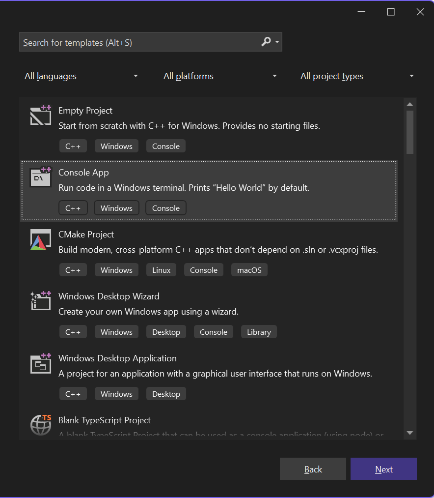
2) Create your new project/solution. For this tutorial the project will be called
sdl_project and the
solution will be called sdl_solution and it will be placed in the Documents folder. You can name it/place it what/where ever you want.
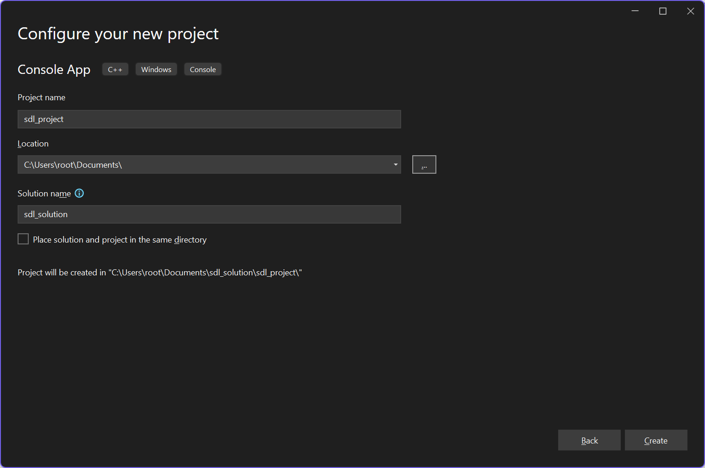
3) Download the tutorial files. Remove the generated cpp file from the project and add
01-hello-sdl3.cpp from the zip file.
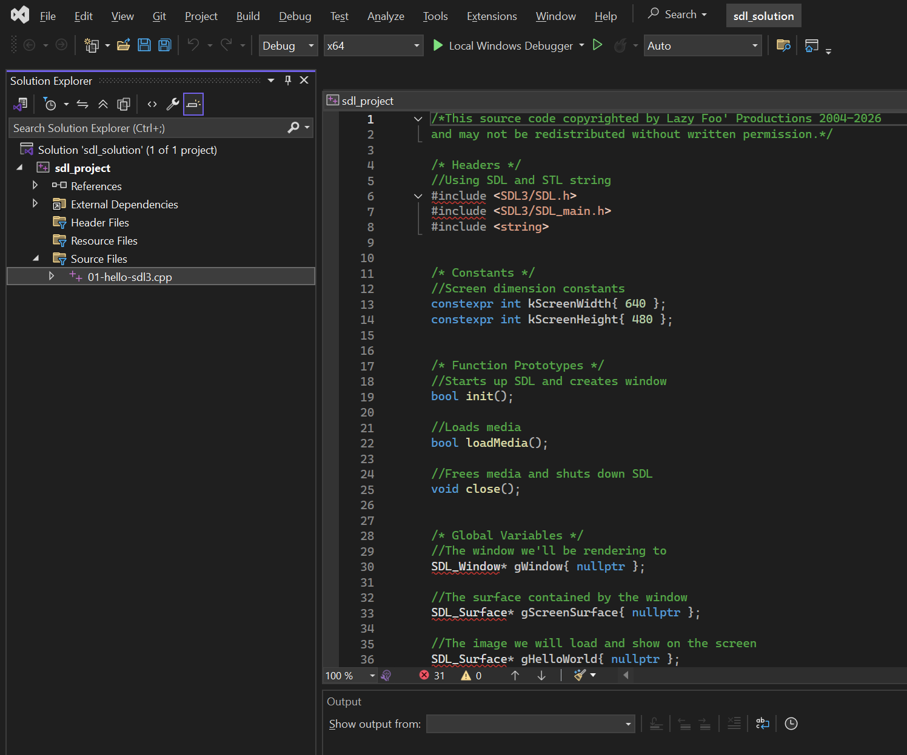
4) If you try to build the solution now, you'll get the following error:
error C1083: Cannot open include file: 'SDL3/SDL.h': No such file or directoryThis makes sense because we are telling Visual Studio to include the SDL headers but since SDL is not a default library, Visual Studio can't find them. We need to do two things: download the SDL3 development libraries and tell Visual Studio where to find the headers.
Go download the SDL3 Visual Studio development libraries on the SDL GitHub (we're assuming you're building for x64 Windows). Click Show All Assets if you need to:
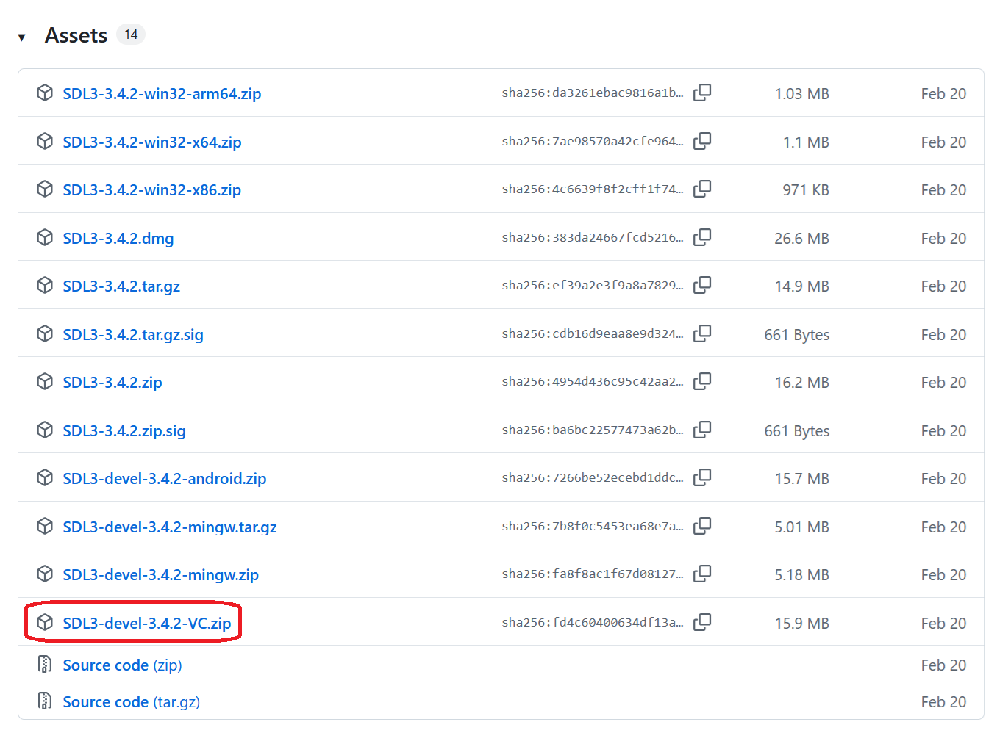
You can save the development libraries where ever you want. I am putting them in the solutions folder alongside the project folder. Extract the contents of the zip folder. Because I created my solution in the Documents folder, I extracted the zip file inside inside the solution folder, and I am using SDL3 version 3.4.2, the SDL3 header file will be located at
Documents\sdl_solution\SDL3-3.4.2\include\SDL3\SDL.h. If you
placed your folders differently or used a different version of SDL3 (which you likely will in the near future), you exact path will vary.So we have the SDL3 development libraries extracted and now we need to point Visual Studio to the header files. Right click on your project in the solution explorer and select Properties:
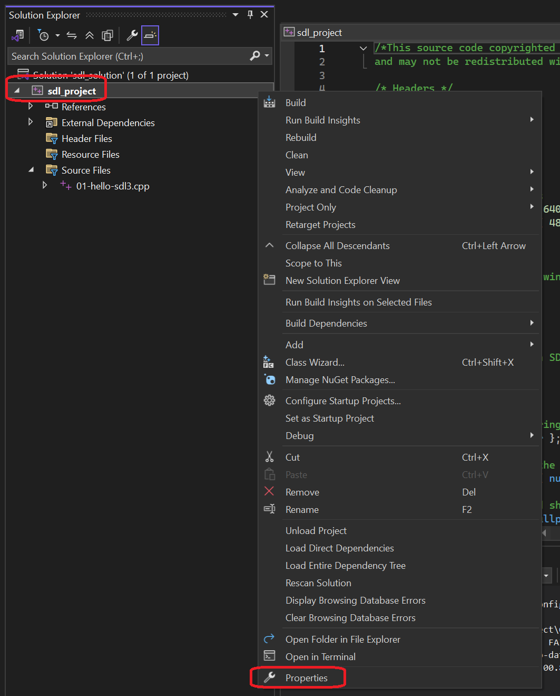
Go to Configuration Properties -> VC++ Directories -> Include Directories -> Edit:
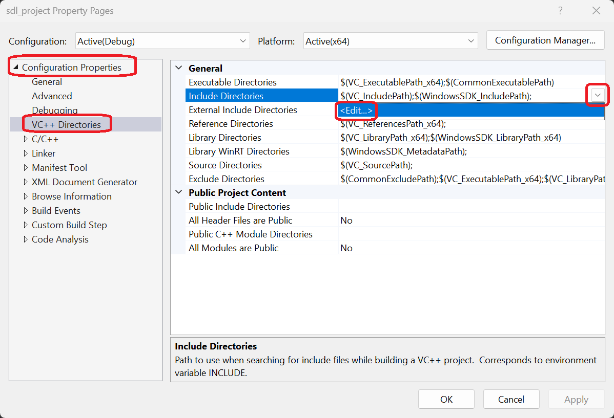
And paste in
$(SolutionDir)\SDL3-YOUR.SDL3.VERSION\include
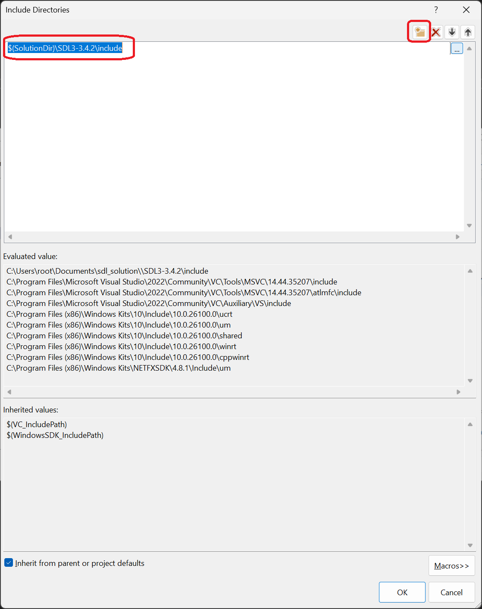
SDL3-YOUR.SDL3.VERSION\include, which is
convenient because if you move your solution folder, Visual Studio will still be able to find the include directory. This is why using relative
paths is generally better than using absolute paths.5) If you apply/OK everything and try to build your solution, you'll get the following error:
error C2429: language feature 'init-statements in if/switch' requires compiler flag '/std:c++17'We are using C++ 17 for this tutorial set so we need to enable it.
Open up your project properties again, Configuration Properties -> General -> C++ Language Standard -> ISO C++17 Standard:
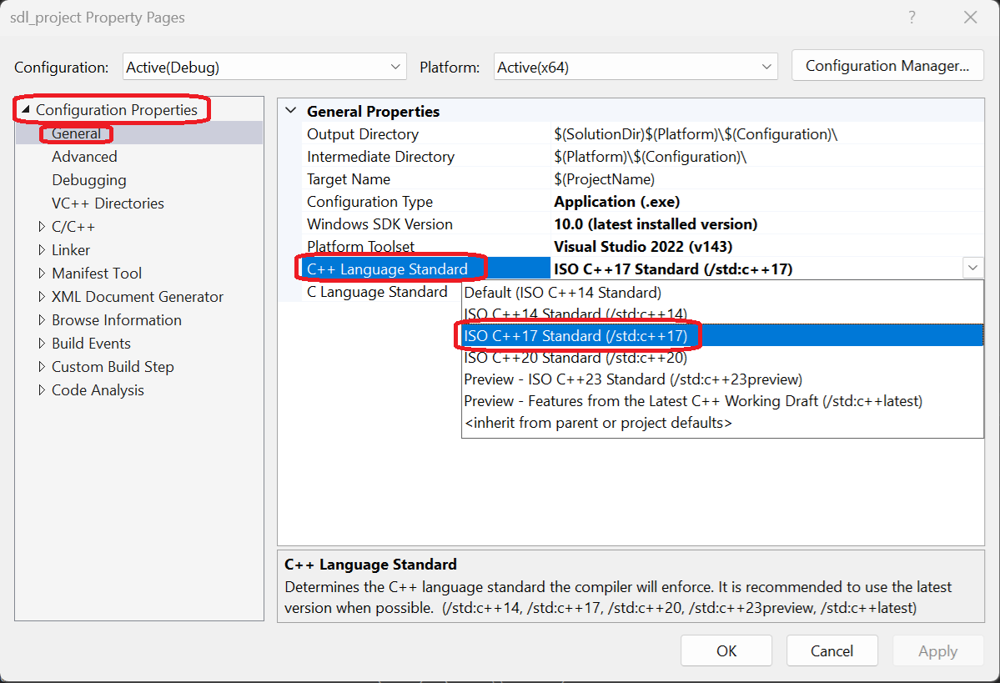
6) If you try to build your solution this time, you'll get a bunch of errors like:
error LNK2019: unresolved external symbol SDL_GetError referenced in function "bool __cdecl init(void)" (?init@@YA_NXZ)These are linker errors which means Visual Studio does not know where to find the definitions for the SDL library.
To fix this, open up your project properties again, Go to Configuration Properties -> VC++ Directories -> Library Directories -> Edit:
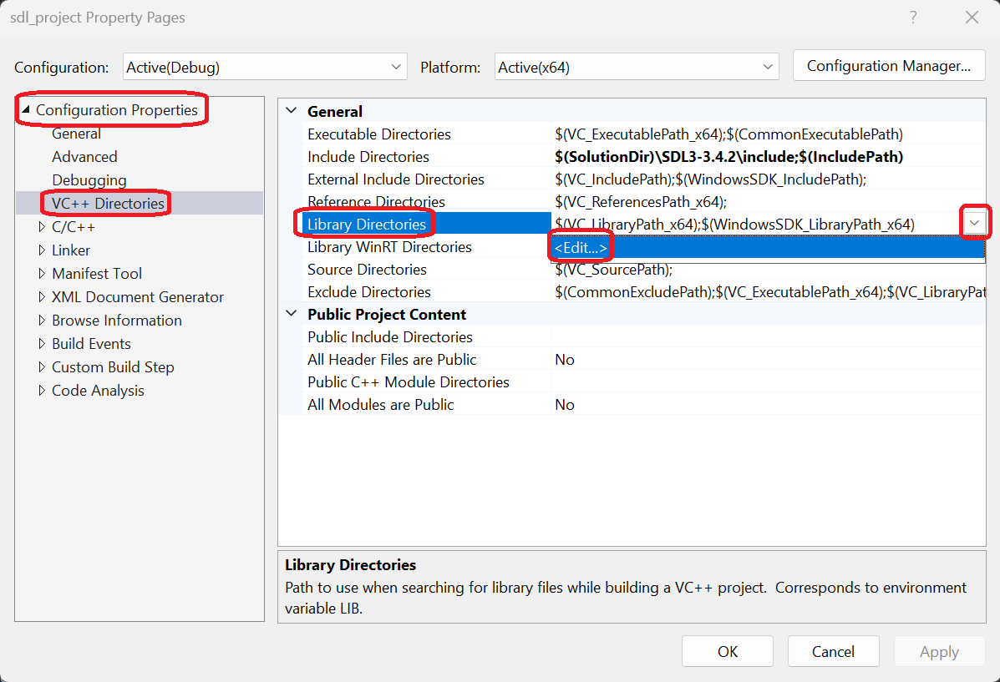
And paste in
$(SolutionDir)\SDL3-YOUR.SDL3.VERSION\lib\x64 (we're assuming you're building for x64 Windows):
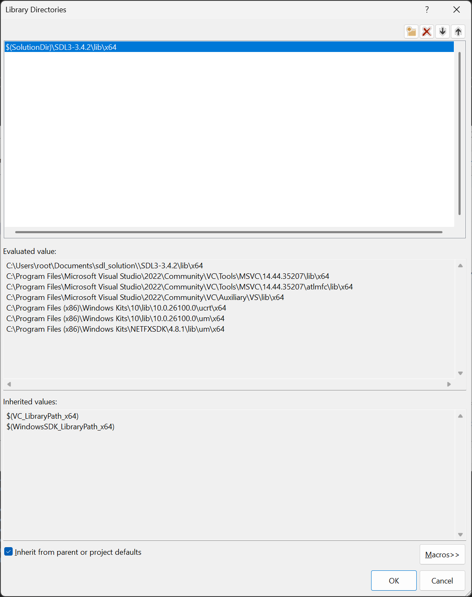
7) If you try to build the solution now, you'll still get linker errors. You need to tell Visual Studio to link against SDL3 now that it knows where to find the lib file. Once again open up the project properties, Configuration Properties -> Linker -> Input -> Additional Dependencies -> Edit:
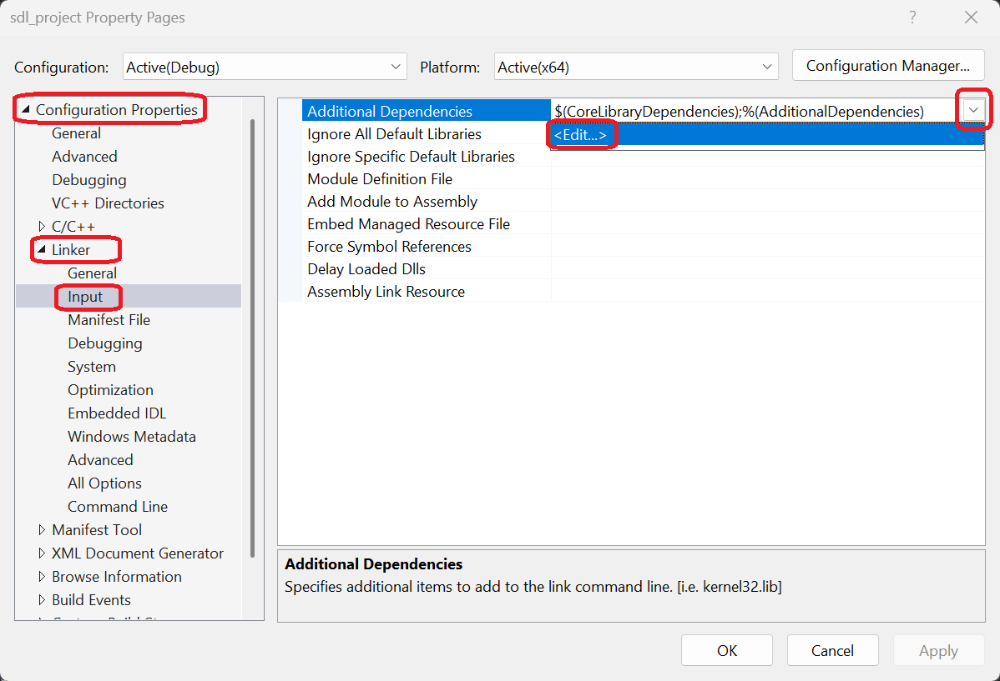
Then paste in
SDL3.lib:
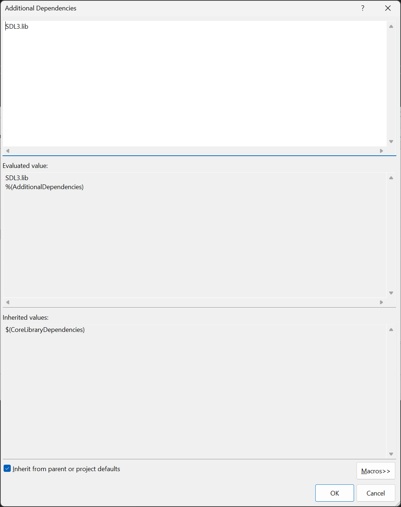
8) Now your project should build. However, if you try to run it, you'll get:
The code execution cannot proceed because SDL3.dll was not found. Reinstalling the program may fix this problemWhile Visual Studio knows how to find the symbols in the SDL3.dll file thanks to the lib file, does doesn't know where the DLL file itself is.
Once again open up your project properties, Configuration Properties -> Debugging -> Environment -> Edit:
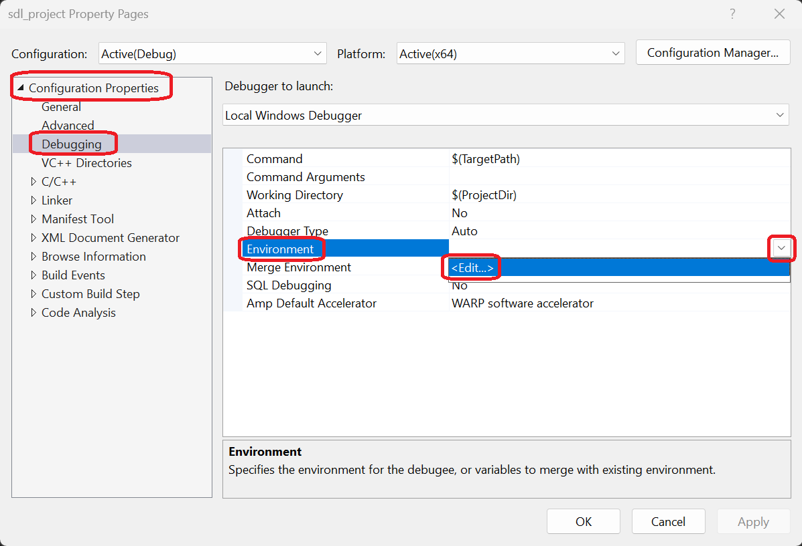
And paste in
PATH=%PATH%;$(SolutionDir)\SDL3-YOUR.SDL3.VERSION\lib\x64:
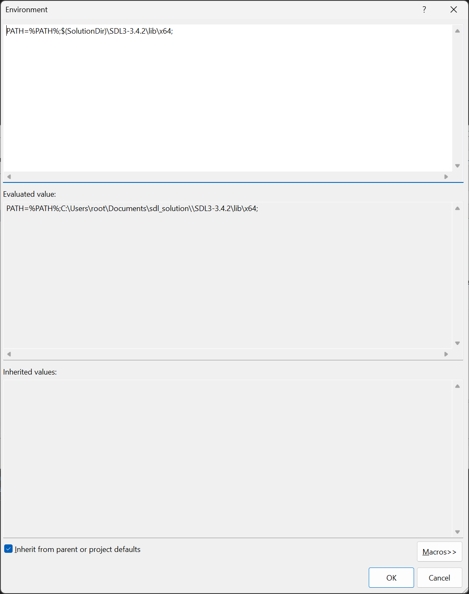
What this does is that it augments the PATH environment variable so Visual Studio will look in the library directory we extracted.
9) At this point your project will build and run but it will quickly exit with:
Unable to load image 01-hello-sdl3/hello-sdl3.bmp! SDL Error: Couldn't open 01-hello-sdl3/hello-sdl3.bmp: The system cannot find the path specified.This means it could not find the bmp file to load.
To fix this we need to set the working directory which is where the executable works from. For this tutorial, we are going to assume you extracted the tutorial zip in the solution folder. This means the bmp file should be at
Documents\sdl_solution\01-hello-sdl3\hello-sdl3.bmpOnce again, project properties, Configuration Properties -> Debugging -> Environment -> Edit:
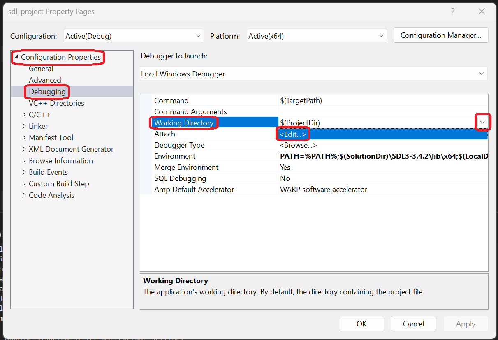
And paste in
$(SolutionDir):
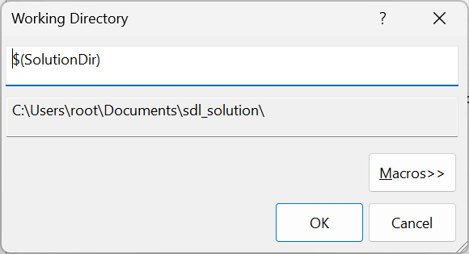
Now your application should build and run properly. You may be wondering since the working directory was originally
$(ProjectDir),
does that mean we could have put the bmp file at Documents\sdl_solution\sdl_project\01-hello-sdl3\hello-sdl3.bmp and it would have
worked? Absolutely, but I think it's important that you are aware of the working directory and how to configure it.You may have been annoyed about the fact that we did every error as opposed to just doing the set up correctly the first time. I would argue that it's important not only how to do things correctly, but also to know how to handle when things go wrong.
With SDL3 set up, you can move onto the second part of the tutorial.
Setting up SDL Extension Libraries
Guys, I really hate doing set up tutorials. They are just so time consuming and tedious. Rather than create a separate tutorial for SDL_image, an extension library that allows you to load many different image formats, I will just add it here.Knowing how to set up extension libraries is important because they add very useful functionality like loading TTF fonts or advanced audio. Here we're going to add SDL_image loading to the first tutorial.
10) In the tutorial source code look for the line that says:
if( gHelloWorld = SDL_LoadBMP( imagePath.c_str() ); gHelloWorld == nullptr )Now replace it with:
if( gHelloWorld = IMG_Load( imagePath.c_str() ); gHelloWorld == nullptr )This is the SDL_image loading function which can load many image file types. However, SDL_image is not a core part of SDL, so you need to add another library to your SDL project to use it.
11) If you tried to compile the code after making the above adjustment, you would have gotten the following error:
error C3861: 'IMG_Load': identifier not foundVisual Studio does not know about SDL_image so we need to add it to the project. Go download SDL_image from the SDL_image GitHub and extract it alongside SDL3:
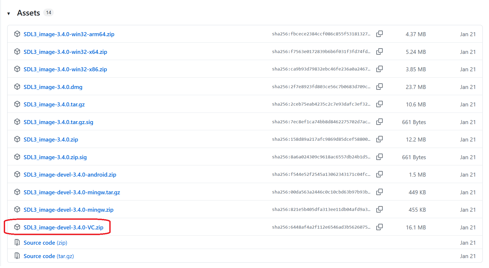
12) Append
#include <SDL3_image/SDL_image.h> to the includes in the cpp file and as you would expect
you would get a error C1083: Cannot open include file: 'SDL3_image/SDL_image.h': No such file or directory error. Like before,
you need to Add the SDL_image header directory:
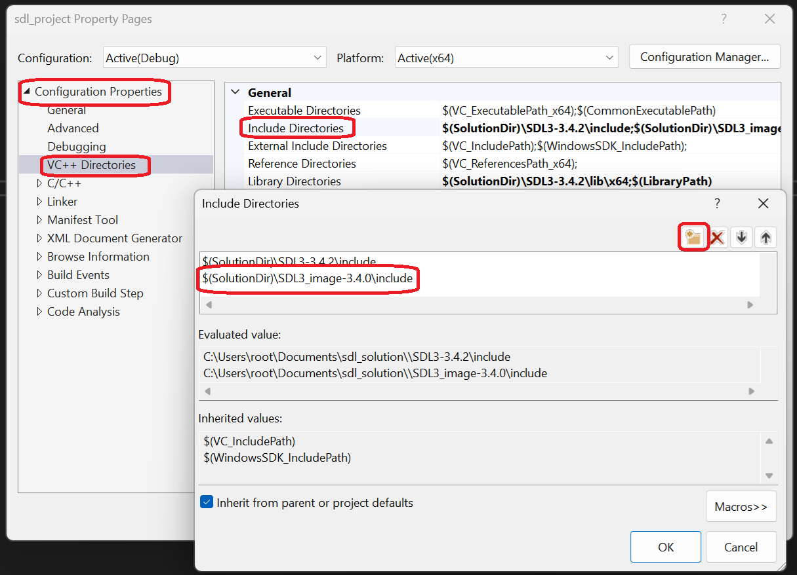
13) If you try to build, you'll get
error LNK2019: unresolved external symbol IMG_Load referenced in function "bool __cdecl loadMedia(void)" (?loadMedia@@YA_NXZ). I'm sure
you recognize this as a linker error.To fix this you need to add the SDL_image lib directory and add SDL_image to the linker:
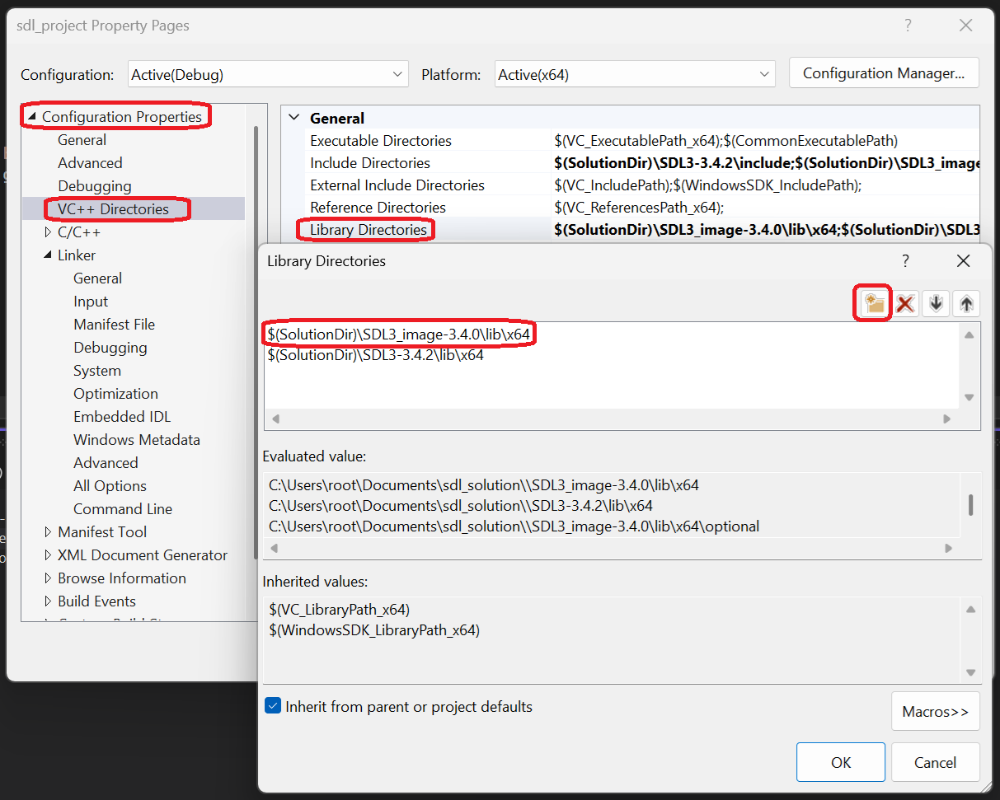
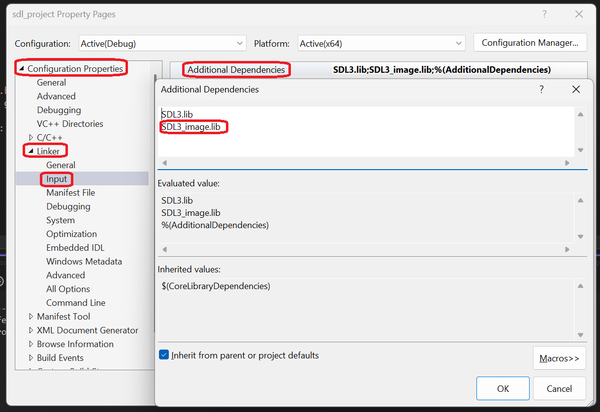
14) Now your program should build but it will run with a
The code execution cannot proceed because SDL3_image.dll was not found. Reinstalling the program may fix this problem error. You
should know this is a PATH variable issue:
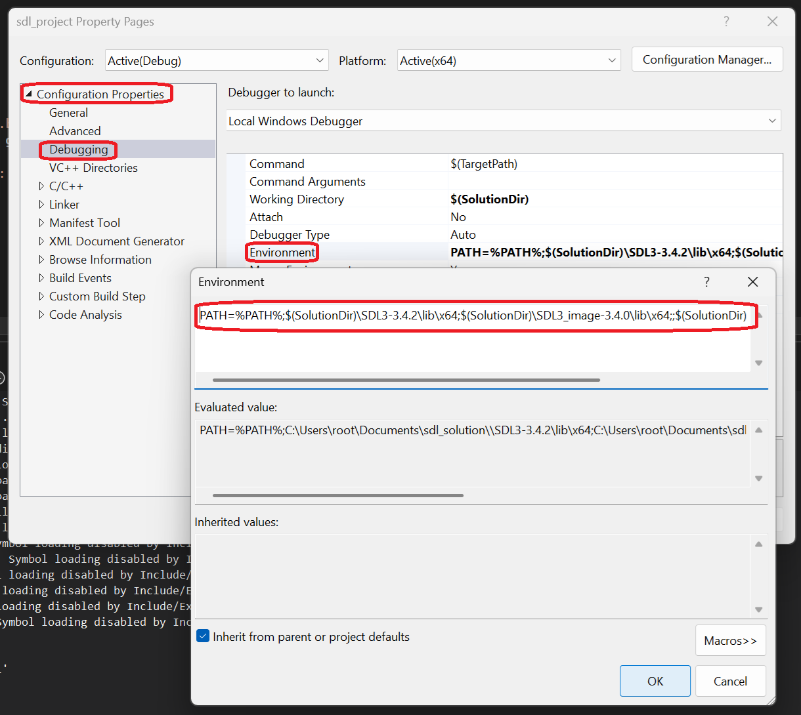
One thing to make sure to take note of is that the lib directory in the SDL_image development zip you downloaded as a sub directory called optional. Make sure you add both the path to the
lib\x64 folder and the lib\x64\optional folder so it can find all the DLL files:PATH=%PATH%;$(SolutionDir)\SDL3-YOUR.SDL3.VERSION\lib\x64;$(SolutionDir)\SDL3_image-YOUR.SDL3_IMAGE.VERSION\lib\x64;$(SolutionDir)\SDL3_image-YOUR.SDL3_IMAGE.VERSION\lib\x64\optionalNow the program should run with SDL_image loading the image. You may be wondering why we aren't setting the working directory. It's the same image so the project is already pointing to it.
Now that you also have SDL_image set up, you can move onto the second part of the tutorial.
Addendum: Build Engineering
This thing we're doing where we're setting up things to compile is known as build engineering. Large companies will dedicate entire teams to this.
Despite the fact that I have done SDL set up tutorials for years, I would say this tutorial is the first time I have done it correctly where things are loosely coupled. Yeah, when dealing with professional level software even the act of getting your code the build becomes a thing.
If you want to learn more about how to automate stuff like this, look into MSBuild and PowerShell.
Despite the fact that I have done SDL set up tutorials for years, I would say this tutorial is the first time I have done it correctly where things are loosely coupled. Yeah, when dealing with professional level software even the act of getting your code the build becomes a thing.
If you want to learn more about how to automate stuff like this, look into MSBuild and PowerShell.